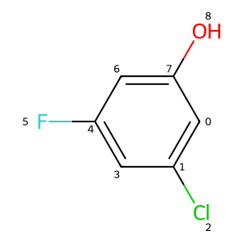

from rdkit import Chem
from rdkit.Chem import Draw
from rdkit.Chem.Draw import IPythonConsole
import rdkit
print(rdkit.__version__)2024.09.4This is another tutorial post, this time looking at editing molecules: adding and removing atoms and bonds.
from rdkit import Chem
from rdkit.Chem import Draw
from rdkit.Chem.Draw import IPythonConsole
import rdkit
print(rdkit.__version__)2024.09.4IPythonConsole.drawOptions.addAtomIndices = True
IPythonConsole.molSize = 300,300m = Chem.MolFromSmiles('c1c(Cl)cc(F)cc1O')
m
If we want to add or remove atoms and bonds we construct an RWMol (a Read/Write molecule) and then call RemoveAtom():
rwm = Chem.RWMol(m)
rwm.RemoveAtom(8)
rwmTo remove bonds, we provide the atom indices:
rwm.RemoveBond(4,5)
rwmThis is a bit awkward since atom numbers change when we remove atoms. We can see this by getting a new copy of the original molecule and removing atom 2:
rwm = Chem.RWMol(m)
rwm.RemoveAtom(2)
rwm
Now the F is atom 7 instead of being atom 8 and atoms 4 and 5 are no longer connected (the bond we want is between atoms 3 and 4).
So when working this way, we need to be sure to remove the atoms in order of decreasing atomic index, and to remove bonds before we remove atoms. Otherwise we get errors or incorrect results:
rwm.RemoveAtom(8)[05:24:31]
****
Range Error
idx
Violation occurred on line 209 in file /home/conda/feedstock_root/build_artifacts/rdkit-meta_1736094075412/work/Code/GraphMol/ROMol.cpp
Failed Expression: 8 < 8
----------
Stacktrace:
0# Invar::Invariant::toString[abi:cxx11]() const in /home/glandrum/mambaforge/envs/rdkit_blog/lib/python3.12/site-packages/rdkit/../../../libRDKitRDGeneral.so.1
1# Invar::operator<<(std::ostream&, Invar::Invariant const&) in /home/glandrum/mambaforge/envs/rdkit_blog/lib/python3.12/site-packages/rdkit/../../../libRDKitRDGeneral.so.1
2# RDKit::ROMol::getAtomWithIdx(unsigned int) in /home/glandrum/mambaforge/envs/rdkit_blog/lib/python3.12/site-packages/rdkit/Chem/../../../../libRDKitGraphMol.so.1
3# RDKit::RWMol::removeAtom(unsigned int) in /home/glandrum/mambaforge/envs/rdkit_blog/lib/python3.12/site-packages/rdkit/Chem/../../../../libRDKitGraphMol.so.1
4# 0x0000735214F7531E in /home/glandrum/mambaforge/envs/rdkit_blog/lib/python3.12/site-packages/rdkit/Chem/rdchem.so
5# boost::python::objects::function::call(_object*, _object*) const in /home/glandrum/mambaforge/envs/rdkit_blog/lib/python3.12/site-packages/rdkit/../../../libboost_python312.so.1.86.0
6# 0x00007353092E0779 in /home/glandrum/mambaforge/envs/rdkit_blog/lib/python3.12/site-packages/rdkit/../../../libboost_python312.so.1.86.0
7# boost::python::detail::exception_handler::operator()(boost::function_n<void> const&) const in /home/glandrum/mambaforge/envs/rdkit_blog/lib/python3.12/site-packages/rdkit/../../../libboost_python312.so.1.86.0
8# 0x00007352EA17E134 in /home/glandrum/mambaforge/envs/rdkit_blog/lib/python3.12/site-packages/rdkit/Chem/rdChemReactions.so
9# 0x00007352EA17E184 in /home/glandrum/mambaforge/envs/rdkit_blog/lib/python3.12/site-packages/rdkit/Chem/rdChemReactions.so
10# 0x00007352F7582864 in /home/glandrum/mambaforge/envs/rdkit_blog/lib/python3.12/site-packages/rdkit/Chem/rdDepictor.so
11# 0x0000735300D1DD14 in /home/glandrum/mambaforge/envs/rdkit_blog/lib/python3.12/site-packages/rdkit/Chem/rdmolfiles.so
12# 0x0000735300D1DD64 in /home/glandrum/mambaforge/envs/rdkit_blog/lib/python3.12/site-packages/rdkit/Chem/rdmolfiles.so
13# 0x0000735309C0A8E4 in /home/glandrum/mambaforge/envs/rdkit_blog/lib/python3.12/site-packages/rdkit/Chem/rdCIPLabeler.so
14# 0x0000735214F76EF4 in /home/glandrum/mambaforge/envs/rdkit_blog/lib/python3.12/site-packages/rdkit/Chem/rdchem.so
15# 0x0000735214F09CBD in /home/glandrum/mambaforge/envs/rdkit_blog/lib/python3.12/site-packages/rdkit/Chem/rdchem.so
16# 0x0000735214F0992D in /home/glandrum/mambaforge/envs/rdkit_blog/lib/python3.12/site-packages/rdkit/Chem/rdchem.so
17# 0x0000735214F0959D in /home/glandrum/mambaforge/envs/rdkit_blog/lib/python3.12/site-packages/rdkit/Chem/rdchem.so
18# 0x0000735214F0920D in /home/glandrum/mambaforge/envs/rdkit_blog/lib/python3.12/site-packages/rdkit/Chem/rdchem.so
19# 0x0000735214F08E7D in /home/glandrum/mambaforge/envs/rdkit_blog/lib/python3.12/site-packages/rdkit/Chem/rdchem.so
20# 0x0000735308652C04 in /home/glandrum/mambaforge/envs/rdkit_blog/lib/python3.12/site-packages/rdkit/rdBase.so
21# 0x0000735308652C54 in /home/glandrum/mambaforge/envs/rdkit_blog/lib/python3.12/site-packages/rdkit/rdBase.so
22# 0x0000735308652CA4 in /home/glandrum/mambaforge/envs/rdkit_blog/lib/python3.12/site-packages/rdkit/rdBase.so
23# 0x0000735308652CF4 in /home/glandrum/mambaforge/envs/rdkit_blog/lib/python3.12/site-packages/rdkit/rdBase.so
24# boost::python::handle_exception_impl(boost::function_n<void>) in /home/glandrum/mambaforge/envs/rdkit_blog/lib/python3.12/site-packages/rdkit/../../../libboost_python312.so.1.86.0
25# 0x00007353092DD3B3 in /home/glandrum/mambaforge/envs/rdkit_blog/lib/python3.12/site-packages/rdkit/../../../libboost_python312.so.1.86.0
26# _PyObject_MakeTpCall in /home/glandrum/mambaforge/envs/rdkit_blog/bin/python
27# 0x000055BEF1BF62F7 in /home/glandrum/mambaforge/envs/rdkit_blog/bin/python
28# PyEval_EvalCode in /home/glandrum/mambaforge/envs/rdkit_blog/bin/python
29# 0x000055BEF1DB9E2E in /home/glandrum/mambaforge/envs/rdkit_blog/bin/python
30# 0x000055BEF1BF6BE4 in /home/glandrum/mambaforge/envs/rdkit_blog/bin/python
31# 0x000055BEF1DB490F in /home/glandrum/mambaforge/envs/rdkit_blog/bin/python
32# 0x000055BEF1DB5BC7 in /home/glandrum/mambaforge/envs/rdkit_blog/bin/python
33# 0x000055BEF1BF7A8E in /home/glandrum/mambaforge/envs/rdkit_blog/bin/python
34# 0x000055BEF1D34E4C in /home/glandrum/mambaforge/envs/rdkit_blog/bin/python
35# 0x000055BEF1D3492E in /home/glandrum/mambaforge/envs/rdkit_blog/bin/python
36# _PyObject_Call in /home/glandrum/mambaforge/envs/rdkit_blog/bin/python
37# 0x000055BEF1BF6F8F in /home/glandrum/mambaforge/envs/rdkit_blog/bin/python
38# 0x000055BEF1DB490F in /home/glandrum/mambaforge/envs/rdkit_blog/bin/python
39# 0x000073530CAA225C in /home/glandrum/mambaforge/envs/rdkit_blog/lib/python3.12/lib-dynload/_asyncio.cpython-312-x86_64-linux-gnu.so
40# 0x000073530CAA29E5 in /home/glandrum/mambaforge/envs/rdkit_blog/lib/python3.12/lib-dynload/_asyncio.cpython-312-x86_64-linux-gnu.so
41# 0x000055BEF1D0635C in /home/glandrum/mambaforge/envs/rdkit_blog/bin/python
42# 0x000055BEF1E30D5C in /home/glandrum/mambaforge/envs/rdkit_blog/bin/python
43# 0x000055BEF1CA7F90 in /home/glandrum/mambaforge/envs/rdkit_blog/bin/python
44# 0x000055BEF1CFC86B in /home/glandrum/mambaforge/envs/rdkit_blog/bin/python
45# 0x000055BEF1BF6F8F in /home/glandrum/mambaforge/envs/rdkit_blog/bin/python
46# PyEval_EvalCode in /home/glandrum/mambaforge/envs/rdkit_blog/bin/python
47# 0x000055BEF1DB9E2E in /home/glandrum/mambaforge/envs/rdkit_blog/bin/python
48# 0x000055BEF1CFC86B in /home/glandrum/mambaforge/envs/rdkit_blog/bin/python
49# PyObject_Vectorcall in /home/glandrum/mambaforge/envs/rdkit_blog/bin/python
50# 0x000055BEF1BF62F7 in /home/glandrum/mambaforge/envs/rdkit_blog/bin/python
51# 0x000055BEF1DCEE48 in /home/glandrum/mambaforge/envs/rdkit_blog/bin/python
52# Py_RunMain in /home/glandrum/mambaforge/envs/rdkit_blog/bin/python
53# Py_BytesMain in /home/glandrum/mambaforge/envs/rdkit_blog/bin/python
54# 0x000073530D829D90 in /lib/x86_64-linux-gnu/libc.so.6
55# __libc_start_main in /lib/x86_64-linux-gnu/libc.so.6
56# 0x000055BEF1D87131 in /home/glandrum/mambaforge/envs/rdkit_blog/bin/python
----------
****
--------------------------------------------------------------------------- RuntimeError Traceback (most recent call last) Cell In[7], line 1 ----> 1 rwm.RemoveAtom(8) RuntimeError: Range Error idx Violation occurred on line 209 in file Code/GraphMol/ROMol.cpp Failed Expression: 8 < 8 RDKIT: 2024.09.4 BOOST:
rwm.RemoveBond(4,5) # nothing happens since there is no bond to remove
rwmSince that’s all kind of a pain, a few years ago we added functionality to allow you to batch the removal of atoms and bonds. The atoms and bonds are not removed until the batch is finished:
rwm = Chem.RWMol(m)
rwm.BeginBatchEdit() # start a batch
rwm.RemoveAtom(2)
rwm.RemoveAtom(8)
rwm.RemoveBond(4,5)
rwm.CommitBatchEdit() # finish the batch
rwmThis has the added benefit of being a bit faster.
Finally, when we are done modifying the molecule, we can easily convert back to standard RDKit molecule:
m2 = rwm.GetMol()
Chem.SanitizeMol(m2)
m2Here’s there’s no equivalent of batch editing, but it’s less important
m = Chem.MolFromSmiles('c1ccc(O)cc1')
mrwm = Chem.RWMol(m)
rwm.AddAtom(Chem.Atom(6))7That’s the new atom index, which we can directly use:
rwm.AddBond(4,7,Chem.BondType.SINGLE)
rwmNotice that the chemistry is wrong here (it’s still showing an implicit H on the O), but sanitization will clear this up:
m2 = rwm.GetMol()
Chem.SanitizeMol(m2)
m2This is an easy onea
m = Chem.MolFromSmiles('c1ccc(C(O)C)cc1')
mrwm = Chem.RWMol(m)
rwm.ReplaceAtom(6,Chem.Atom(8))
rwmReplaceBond() is marginally trickier since, for technical reasons, it’s not possible to directly construct a bond in Python:
tempMol = Chem.MolFromSmiles("C=C")
bnd = tempMol.GetBondWithIdx(0)
rwm.ReplaceBond(rwm.GetBondBetweenAtoms(4,6).GetIdx(),bnd)
rwmThe most likely way to end up with molecules that are in an unhappy state, even though you’ve done (mostly) everything right, involve aromatic heteroatoms. This will come as no surprise if you’ve spent much time working with chemistry in the computer.
Here’s an example:
m = Chem.MolFromSmiles('c1cccn1C')
mrwm = Chem.RWMol(m)
rwm.BeginBatchEdit()
rwm.RemoveAtom(5)
rwm.CommitBatchEdit()
rwmThat looks ok, but we can’t sanitize it:
m2 = rwm.GetMol()
Chem.SanitizeMol(m2)[05:24:37] Can't kekulize mol. Unkekulized atoms: 0 1 2 3 4--------------------------------------------------------------------------- KekulizeException Traceback (most recent call last) Cell In[20], line 2 1 m2 = rwm.GetMol() ----> 2 Chem.SanitizeMol(m2) KekulizeException: Can't kekulize mol. Unkekulized atoms: 0 1 2 3 4
This fails because we removed a bond from the aromatic N without updating its implicit H count. We can fix that:
at = rwm.GetAtomWithIdx(4)
at.SetNoImplicit(True)
at.SetNumExplicitHs(1)
m2 = rwm.GetMol()
Chem.SanitizeMol(m2)
m2
A similar problem happens when we add bonds to aromatic heteroatoms:
rwm = Chem.RWMol(m2)
aid = rwm.AddAtom(Chem.Atom(6))
rwm.AddBond(4,aid,Chem.BondType.SINGLE)
rwmm3 = rwm.GetMol()
Chem.SanitizeMol(m3)[05:24:38] Explicit valence for atom # 4 N, 5, is greater than permitted--------------------------------------------------------------------------- AtomValenceException Traceback (most recent call last) Cell In[23], line 2 1 m3 = rwm.GetMol() ----> 2 Chem.SanitizeMol(m3) AtomValenceException: Explicit valence for atom # 4 N, 5, is greater than permitted
The fix, once again, is to update the implicit H parameters on the aromatic heteroatom:
rwm = Chem.RWMol(m2)
aid = rwm.AddAtom(Chem.Atom(6))
rwm.AddBond(4,aid,Chem.BondType.SINGLE)
at = rwm.GetAtomWithIdx(4)
at.SetNumExplicitHs(0)
at.SetNoImplicit(False)
rwmm3 = rwm.GetMol()
Chem.SanitizeMol(m3)
m3As usual, I hope this was useful.